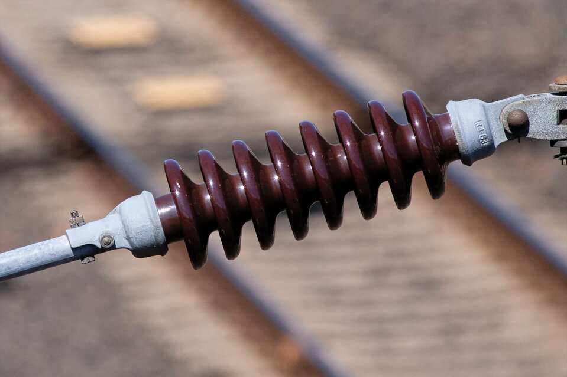

Izolatory

Izolator- czyli swobodne cząsteczki które są nośnikami ładunku elektrycznego. W przypadku metali cząsteczki to elektrony swobodne zaś w elektrolitach jony, zarówno te ujemne jak i dodatnie. Najważniejszą cechą izolatorów jest to że nie przewodzą prądu elektrycznego. Pojęcie izolatora elektrycznego obojmuje zagadnienia dotyczące fizyki a dokładniej prądu elektrycznego.
Parametry charakteryzujące izolatory:
- Napięcie znamionowe
- Droga upływu
- Droga przeskoku
- Droga przebicia
- Napięcie probiercze
- Obciążenie probiercze
- Wytrzymałość mechaniczna
- Wytrzymałość elektromechaniczna
Takimi najczęściej spotykanymi izolatorami to :
- izolatory przepustowe
- izolatory wsporcze
- izolatory stojące